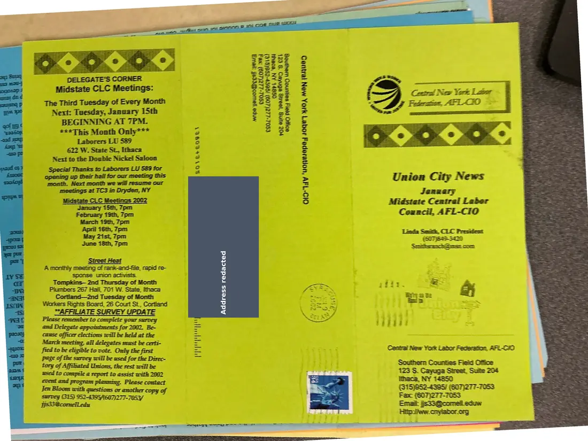
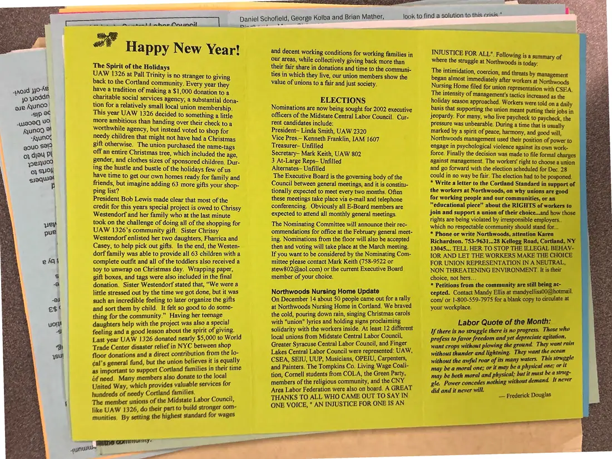

Newsletter, 2 pages
Union City News, Midstate Central Labor Council, January [2002]
January [2002]Date inferred
A tri-fold newsletter produced by the Central New York Labor Federation for the Midstate Central Labor Council (president Linda Smith). This issue carries holiday notes, council election nominations, a Northwoods Nursing Home update, and a meeting calendar. The mailing panel and the inside spread were photographed separately.
The year comes from the 2002 meeting schedule printed in the issue.
Download or cite this itemPages


(open zoom view)A personal home address has been covered on this page.
No text could be read from this page automatically.


(open zoom view)Read the page text (machine-read, mostly readable)
This text was generated automatically from the photograph and has not been corrected. The image is the authoritative record.
This year UAW 1326 decided to something a little more ambitious than handing over their check to a worthwhile agency, but instead voted to shop for needy children that might not have had a Christmas ne land ble oft ala yf ends, but imagine adding 63 ue an ae credit for this years special project is owed to Chrissy Westendorf and her family who at the last minute took on the challenge of doing all of the shopping for UAW 1326’s community gift. Sister Chrissy Westendorf enlisted her two daughters, Fharrica and Casey, to help pick out gifts. In the end, the Westen- dorf family was able to provide all 63 children with a complete outfit and all of the toddlers also received a gift boxes, and tags were also included in the final donation. Sister Westendorf stated that, “We were a little stressed out by the time we got done, but it was such an incredible feeling to later organize the gifts and sort them by child. It felt so good to do some- thing for the community.” Having her teenage daughters help with the project was also a special feeling and a good Jesson about the spirit of giving. Last year UAW 1326 donated nearly $5,000 to World Trade Center disaster relief in NYC between shop floor donations and a direct contribution from the lo- éal’s general fund, but the union believes it is equally as important to support Cortland families in their time éf need. Many members also donate to the local United Way, which provides valuable services for tundreds of needy Cortland families. The member unions of the Midstate Labor Council, like UAW 1326, do their part fo build stronger com- munities, By setting the highest standard for wages an ELECTIONS President— Linda Smith, UAW 2320 Vice Pres.— Kenneth Franklin, IAM 1607 Treasurer- Unfilled Secretary— Mark Keith, UAW 802 3 At-Large Reps— Unfilled The Executive Board is the governing body of the Council between general meetings, and it is constitu- tionally expected to meet every two months. Often these meetings take place via e-mail and telephone conferencing, Obviously all E-Board members are expected to attend all monthly general meetings. The Nominating Committee will announce their rec- ommendations for office at the February general meet- then and voting will take place at the March meeting. If you want to be considered by the Nominating Com- mittee please contact Mark Keith (758-9522 or stew802@aol.com) or the current Executive Board On December 14 about 50 people came out for a rally at Northwoods Nursing Home in Cortland. We braved the cold, pouring down rain, singing Christmas carols with "union" lyrics and holding signs 9} oclaiming solidarity with the workers inside. At least 12 different local unions from Midstate Central Labor Council, Lakes Central Labor Council were represented: UAW, CSEA, SEIU, UUP, Musicians, OPEIU, Carpenters, and Painters. The Tompkins Co. Living Wage Coali- members of the religious community, and the CNY Area Labor Federation were also on board. A GREAT THANKS TO ALL WHO CAME OUT TO SAY IN ONE VOICE, “ AN INJUSTICE FOR ONE IS AN INJUSTICE FOR ALL’, Following is a summary of where the struggle at Northwoods is today: The intimidation, Coercion, and threats by ma: trrscr ue Coercion, and threats by management began almost immediately after workers at Northwoods eons : led for union representation with CSEA. nn) SAS AD . Workers were told on a daily basis that supporting the union meant putting their jobs in jeopardy. For many, who live paycheck to paycheck, the pressure was unbearable. During a time that is usually marked by a spirit of peace, harmony, and good will, North woods management used their position of power to engage in psychological violence against its own work- force. Finally the decision was made to file formal charges against management. The workers' right to choose a union and go forward with the election scheduled for Dec. 28 could in no way be fair. The election had to be posponed. * Write a letter to the Cortland Standard in support of the workers at Northwoods, on why unions are good for working people and our communities, or an "educational piece" about the RIGHTS of workers to join and support a union of their choice...and how those rights are being violated by irresponsible employers. which no respectable community should stand for... * Phone or write Northwoods, attention Karen Richardson. 753-9631...28 Kellogg Road, Cortland, NY 13045... TELL HER TO STOP THE ILLEGAL BEHAY- IOR AND LET THE WORKERS MAKE THE CHOICE FOR UNION REPRESENTATION IN A NEUTRAL, NON THREATENING ENVIRONMENT. It is their * Petitions from the community are still being ac- cepted. Contact Mandy Ellis at mandyelliss00@hotmail. com/ or 1-800-559-7975 for a blank copy to circulate at your workplace. Labor Quote of the Month: If there is no struggle there is no progress. Those who and yet depreciate agitation, ntay be a moral one; or it may be a physical one; or it may be both moral and physical; but it must be a strug- gle. Power concedes nothing without demand It never did and it never will. ao — Frederick Douglas
See something wrong, or recognize a person or event? Send a correction. If you hold rights in this item or think it should not be public, write to the same address.